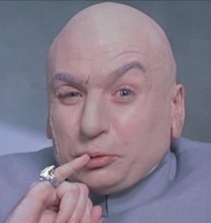

Dr. Evil

Objective
Back in the 60's, I had a weather changing machine that was, in essence, a sophisticated heat beam which we called a "laser." Using these "lasers," we would punch a hole in the protective layer around the Earth, which we scientists call the "Ozone Layer." Slowly but surely, ultraviolet rays would pour in, increasing the risk of skin cancer. That is unless the world pays us a hefty ransom of One... Hundred... BILLION DOLLARS!
Education
M.D. Evil Medical Knowledge
Evil Medical School of Belguim - Brussels, Belguim
Bachelor of Nefarious Scince
Manchester Medlock University - London, United Kingdom
Work Experience
Reasonably Evil Villain
2002
- Lead the relocated my secret lair to the United States, in Southern California behind the Hollywood Sign.
- Devised and proceeded with a plan for world domination that involved traveling back in time to 1975 and partnering with a Dutch, gold-obsessed lesser villain known by the alias "Goldmember" who developed a power unit for a tractor beam. Nearly succeeded in using the tractor beam to pull a meteor into the earth.
Quasi-Evil Villain
1999
- My evil front corporation Virtucon acquired Starbucks, then successfully implemented a plan to make the world addicted to moderately overpriced caffeinated drinks.
- Unveiled and executed a plan to time travel back to the 1960s and steal Austin Powers' mojo, the source of his romantic appeal.
Semi-Evil Villain
1967 - 1997
- Founded Virtucon, the legitimate front of my Evil empire, and delegated operations to my loyal henchman, "Number 2", who grew it into a multibillion-dollar enterprise.
- Successfully evaded Austin Powers by escaping to space in a rocket and cryogenically freezing myself, then returning in the future.
- Conspired to steal nuclear weapons and hold the world hostage for $1 million dollars, later increasing my demand to $100 billion after learning that the value of the dollar had fallen due to inflation.
Skills
- The capacity for evil and a willingness to do bad things.
- Superior intellect.
- Evil planning and leadership.
Links
About Me
Contact Me